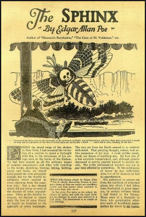

During the dread reign of the Cholera in New York, I had ac- cepted the invitation of a relative to spend a fortnight with him in the retirement of his cottage ornee on the banks of the Hud- son. We had here around us all the ordinary means of summer amusement; and what with rambling in the woods, sketching, boating, fishing, bathing, music, and books, we should have passed the time pleasantly enough, but for the fearful intelli- gence which reached us every morning from the populous city. Not a day elapsed which did not bring us news of the decease of some acquaintance.
Then as the fatality increased, we learned to expect daily the loss of some friend. At length we trembled at the approach of every messenger. The very air from the South seemed to us redolent with death. That palsy- ing thought, indeed, took entire posession of my soul. I could neither speak, think, nor dream of any thing else.
My host was of a less excitable temperament, and, although greatly de- pressed in spirits, exerted himself to sustain my own. His richly philosophical intellect was not at any time affected by unrealit- ies. To the substances of terror he was sufficiently alive, but of its shadows he had no apprehension. His endeavors to arouse me from the condition of abnormal gloom into which I had fallen, were frustrated, in great meas- ure, by certain volumes which I had found in his library. These were of a character to force into germination whatever seeds of hereditary superstition lay latent in my bosom. I had been reading these books without his knowledge, and thus he was often at a loss to account for the forcible impressions which had been made upon my fancy. A favorite topic with me was the popular belief in omens- a belief which, at this one epoch of my life, I was almost seri- ously disposed to defend.
On this subject we had long and an- imated discussions- he maintaining the utter groundlessness of faith in such matters,- I contending that a popular sentiment arising with absolute spontaneity- that is to say, without appar- ent traces of suggestion- had in itself the unmistakable ele- ments of truth, and was entitled to as much respect as that in- tuition which is the idiosyncrasy of the individual man of genius. The fact is, that soon after my arrival at the cottage there had occurred to myself an incident so entirely inexplicable, and 3 which had in it so much of the portentous character, that I might well have been excused for regarding it as an omen. It appalled, and at the same time so confounded and bewildered me, that many days elapsed before I could make up my mind to communicate the circumstances to my friend. Near the close of exceedingly warm day, I was sitting, book in hand, at an open window, commanding, through a long vista of the river banks, a view of a distant hill, the face of which nearest my position had been denuded by what is termed a land-slide, of the principal portion of its trees.
My thoughts had been long wandering from the volume before me to the gloom and desolation of the neighboring city. Uplifting my eyes from the page, they fell upon the naked face of the bill, and upon an object- upon some living monster of hideous conformation, which very rapidly made its way from the summit to the bot- tom, disappearing finally in the dense forest below. As this creature first came in sight, I doubted my own sanity- or at least the evidence of my own eyes; and many minutes passed before I succeeded in convincing myself that I was neither mad nor in a dream. Yet when I described the monster (which I dis- tinctly saw, and calmly surveyed through the whole period of its progress), my readers, I fear, will feel more difficulty in be- ing convinced of these points than even I did myself. Estimating the size of the creature by comparison with the diameter of the large trees near which it passed- the few giants of the forest which had escaped the fury of the land-slide- I concluded it to be far larger than any ship of the line in exist- ence. I say ship of the line, because the shape of the monster suggested the idea- the hull of one of our seventy-four might convey a very tolerable conception of the general outline. The mouth of the animal was situated at the extremity of a probos- cis some sixty or seventy feet in length, and about as thick as the body of an ordinary elephant.
Near the root of this trunk was an immense quantity of black shaggy hair- more than could have been supplied by the coats of a score of buffaloes; and projecting from this hair downwardly and laterally, sprang two gleaming tusks not unlike those of the wild boar, but of in- finitely greater dimensions. Extending forward, parallel with the proboscis, and on each side of it, was a gigantic staff, thirty or forty feet in length, formed seemingly of pure crystal and in 4 shape a perfect prism,- it reflected in the most gorgeous man- ner the rays of the declining sun. The trunk was fashioned like a wedge with the apex to the earth. From it there were out- spread two pairs of wings- each wing nearly one hundred yards in length- one pair being placed above the other, and all thickly covered with metal scales; each scale apparently some ten or twelve feet in diameter. I observed that the upper and lower tiers of wings were connected by a strong chain. But the chief peculiarity of this horrible thing was the representation of a Death's Head, which covered nearly the whole surface of its breast, and which was as accurately traced in glaring white, upon the dark ground of the body, as if it had been there care- fully designed by an artist.
While I regarded the terrific animal, and more especially the appearance on its breast, with a feel- ing or horror and awe- with a sentiment of forthcoming evil, which I found it impossible to quell by any effort of the reason, I perceived the huge jaws at the extremity of the proboscis suddenly expand themselves, and from them there proceeded a sound so loud and so expressive of wo, that it struck upon my nerves like a knell and as the monster disappeared at the foot of the hill, I fell at once, fainting, to the floor. Upon recovering, my first impulse, of course, was to inform my friend of what I had seen and heard- and I can scarcely ex- plain what feeling of repugnance it was which, in the end, op- erated to prevent me. At length, one evening, some three or four days after the oc- currence, we were sitting together in the room in which I had seen the apparition- I occupying the same seat at the same window, and he lounging on a sofa near at hand. The associ- ation of the place and time impelled me to give him an account of the phenomenon. He heard me to the end- at first laughed heartily- and then lapsed into an excessively grave demeanor, as if my insanity was a thing beyond suspicion. At this instant I again had a distinct view of the monster- to which, with a shout of absolute terror, I now directed his attention. He looked eagerly- but maintained that he saw nothing- although I desig- nated minutely the course of the creature, as it made its way down the naked face of the hill.
I was now immeasurably alarmed, for I considered the vision either as an omen of my death, or, worse, as the fore-runner of 5 an attack of mania. I threw myself passionately back in my chair, and for some moments buried my face in my hands. When I uncovered my eyes, the apparition was no longer apparent. My host, however, had in some degree resumed the calmness of his demeanor, and questioned me very rigorously in respect to the conformation of the visionary creature. When I had fully satisfied him on this head, he sighed deeply, as if relieved of some intolerable burden, and went on to talk, with what I thought a cruel calmness, of various points of speculative philosophy, which had heretofore formed subject of discussion between us. I remember his insisting very especially (among other things) upon the idea that the principle source of error in all human investigations lay in the liability of the understand- ing to under-rate or to over-value the importance of an object, through mere mis-admeasurement of its propinquity. "To es- timate properly, for example," he said, "the influence to be ex- ercised on mankind at large by the thorough diffusion of Demo- cracy, the distance of the epoch at which such diffusion may possibly be accomplished should not fail to form an item in the estimate. Yet can you tell me one writer on the subject of gov- ernment who has ever thought this particular branch of the subject worthy of discussion at all?" He here paused for a moment, stepped to a book-case, and brought forth one of the ordinary synopses of Natural History. Requesting me then to exchange seats with him, that he might the better distinguish the fine print of the volume, he took my armchair at the window, and, opening the book, resumed his discourse very much in the same tone as before. "But for your exceeding minuteness," he said, "in describing the monster, I might never have had it in my power to demon- strate to you what it was.
In the first place, let me read to you a schoolboy account of the genus Sphinx, of the family Crepus- cularia of the order Lepidoptera, of the class of Insecta- or in- sects. The account runs thus: "'Four membranous wings covered with little colored scales of metallic appearance; mouth forming a rolled proboscis, pro- duced by an elongation of the jaws, upon the sides of which are found the rudiments of mandibles and downy palpi; the inferior wings retained to the superior by a stiff hair; antennae in the 6 form of an elongated club, prismatic; abdomen pointed, The Death's- headed Sphinx has occasioned much terror among the vulgar, at times, by the melancholy kind of cry which it utters, and the insignia of death which it wears upon its corslet.'" He here closed the book and leaned forward in the chair, pla- cing himself accurately in the position which I had occupied at the moment of beholding "the monster." "Ah, here it is," he presently exclaimed- "it is reascending the face of the hill, and a very remarkable looking creature I admit it to be. Still, it is by no means so large or so distant as you imagined it,- for the fact is that, as it wriggles its way up this thread, which some spider has wrought along the window-sash, I find it to be about the sixteenth of an inch in its extreme length, and also about the sixteenth of an inch distant from the pupil of my eye."
Glosario
Veraniegos: Se refiere a la persona que suele enloquecer o enfermar en verano.
Populosa: Que está habitualmente poblado de gente.
Melancolía: Estado anímico permanente, vago y sosegado, de tristeza y desinterés, que surge por causas físicas o morales, por lo general de leve importancia.
Simiente: Grano contenido en el interior del fruto de una planta y que, puesto en las condiciones adecuadas, germina y da origen a una nueva planta de la misma especie.
Latente: Que existe sin manifestarse o exteriorizarse.
Ominoso: Que es abominable y merece ser condenado y aborrecido
errado: Que comete una equivocación u obra incorrectamente.
Paquebote:Embarcación que lleva correo y pasajeros de un puerto a otro.
Hirsuto:Que está cubierto de este tipo de pelo.
Cúspide:Parte más alta de una elevación
Calamidad:Desgracia, adversidad o infortunio colectivos.
Corselete:Corsé femenino, muy ceñido, que cubre desde el busto hasta el inicio de la pierna.
Presagios:Un presagio es un fenómeno que se cree que sirve para adivinar el futuro, y que a menudo hace referencia al advenimiento de un cambio.
Espontaneidad:La espontaneidad se define como el conjunto de acciones irrazonadas presentes en el comportamiento humano.
Perplejo:Que está confuso y desconcertado y no sabe lo que debe hacer, pensar o decir.
Abrumador:Que agobia o preocupa en exceso:
Desolación:Sensación de hundimiento o vacío provocada por una angustia, dolor o tristeza grandes.
Colina:Elevación natural del terreno, de menor altura que una montaña y de formas suaves.
Repugnancia:Sensación física de desagrado que produce el olor, sabor o visión de algo y que puede llegar a provocar vómito.
Lepidóptera:Los lepidópteros son un orden de insectos holometábolos, casi siempre voladores, conocidos comúnmente como mariposas; las más conocidas son las mariposas diurnas, pero la mayoría de las especies son nocturnas y pasan muy inadvertidas.